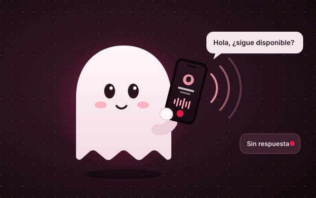
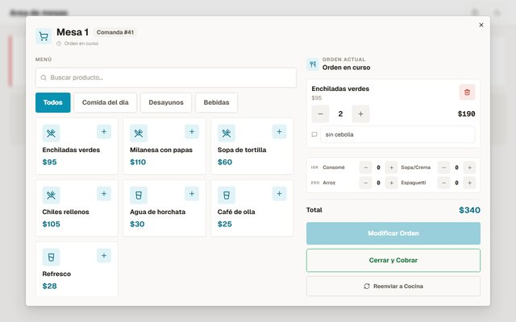
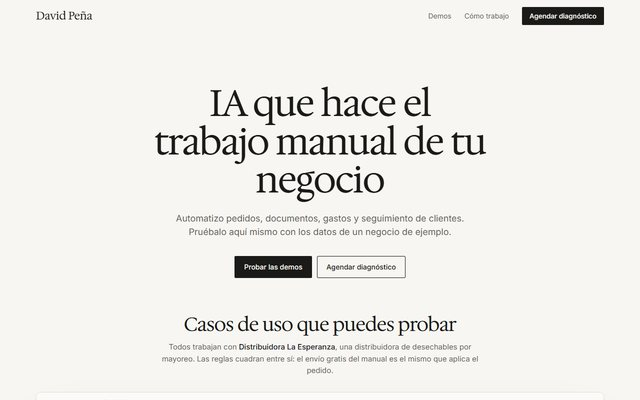
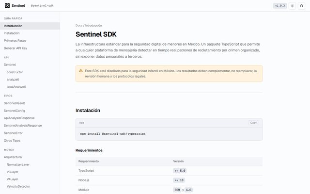
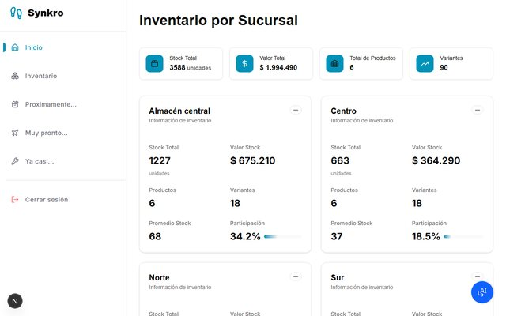
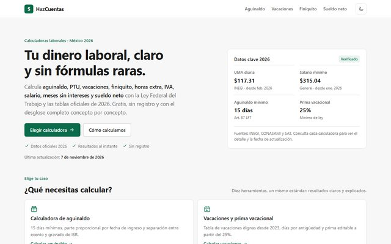

Sobre mí
¡Hola! Soy David y me gusta construir cosas que alguien usa al día siguiente. Estudio Ingeniería en Sistemas Computacionales en la ESCOM del IPN, con enfoque en backend con Java y Spring Boot. Lo que más disfruto es encontrar el proceso que le quita horas a un negocio y convertirlo en un sistema que lo haga solo.
Antes de programar pasé cinco años mejorando la operación de un restaurante, y de ahí nació RestFoodSystem, el punto de venta que hoy usa todos los días. Ahora soy cofundador de Daluss, una consultora de software con otros tres ingenieros, donde automatizamos procesos de PyMEs.
Fuera del código me encuentras en hackatones (con Ghost Shopper quedamos en tercer lugar general entre equipos de México y Colombia), aprendiendo algo nuevo de IA o tocando .
Experiencia
-
2026 — Hoy
Cofundador · Daluss
Consultora de software para PyMEs que fundé con Samuel, Luis y Said: diagnóstico gratis, primera solución en dos semanas a precio fijo y soporte mensual. Participo en la prospección de clientes y en el diseño de soluciones a la medida.
- Automatización
- Consultoría
- Prospección
-
2020 — Hoy
Mejora de procesos operativos · Restaurante
Identifico cuellos de botella en la operación y diseño soluciones para quitarlos. Consolidé el área de comida para llevar reestructurando sus flujos y sus canales digitales. Esta experiencia es la que me llevó a construir RestFoodSystem.
- Procesos
- Operación
- Liderazgo de equipo
- Canales digitales
-
2023 — Hoy
Ingeniería en Sistemas Computacionales · ESCOM, IPN
Técnico en Computación · CECyT 3 «Estanislao Ramírez Ruiz», 2020 — 2023
Quinto semestre. Proyectos de procesamiento de señales con hardware, redes con UDP y aplicaciones web; inglés en nivel avanzado en CELEX ESCOM.
- Java
- Python
- C
- SQL
Proyectos
-

Ghost Shopper
Agente de IA que hace "cliente misterioso" automático: encuentra los contactos de ventas de una empresa, les llama con voz generada o les escribe por WhatsApp como un cliente real, y transcribe y califica cada conversación en un tablero. Hecho en 24 horas en el LatamBuilds GTM Hackathon. En una prueba real, el 36% de los leads nunca recibió respuesta.
Tercer lugar general · México vs. Colombia
- Agentes de IA
- ElevenLabs
- Python
-

RestFoodSystem
Punto de venta full-stack para restaurante: los meseros capturan la orden y la cocina la recibe al instante. Cobro, tickets e inventario que se descuenta solo por receta. Opera en red local y está en uso diario.
En producción desde julio de 2026
- Spring Boot 3.5
- Java 17
- MySQL
- JWT
- WebSockets
- React 19
- Tailwind CSS
-

Demos de automatización con IA
Cuatro automatizaciones que se prueban en el navegador: un mensaje de WhatsApp que se vuelve pedido, un asistente que responde con los documentos del negocio, un ticket que pasa solo a contabilidad y un agente que llena el CRM.
- JavaScript
- RAG
- Agentes
- BM25
-

Sentinel
Motor híbrido que detecta reclutamiento criminal de menores en la jerga mexicana. Un SDK en el dispositivo analiza cada mensaje en menos de 8 ms y deshace ofuscaciones como «F4ceB00k»; si hay duda, escala a un LLM de 70B que ubica la etapa del riesgo en menos de 2 segundos. Hecho en 72 horas en el Hackathon 404: Threat Not Found.
- SDK
- LLMs
- Trust & Safety
- Privacy by design
-

Synkro
Inventario multisucursal para un caso real de cadena de suministro, en el Logistics Hackathon de ASCM UPIICSA y Binary Brains. Mi primer hackatón: fui el responsable del backend en un equipo multidisciplinario.
Tercer lugar · patrocinado por IBM y DM
- TypeScript
- IBM Watson
- Logística
-

HazCuentas
Diez calculadoras laborales para México: aguinaldo, finiquito, vacaciones, PTU y sueldo neto, con las tablas oficiales de 2026 y el desglose concepto por concepto.
- Cloudflare Workers
- JavaScript
- SEO
Logros
- 2026LatamBuilds GTM Hackathon · Ghost ShopperTercer lugar general
- 2026Kavak × OpenAI × Primero AI HackathonParticipante
- 2026AI Hackathon por México × Clara · Mexico Tech WeekParticipante
- 2026Samsung Innovation CampusSeleccionado
- 2026Hackathon 404: Threat Not Found · SentinelParticipante
- 2026Google Cloud Engineering CertificateCertificación
- 2026ONE Latam G8 Hackathon · Oracle × AluraCertificado
- 2025ONE Tech Advanced · Oracle Next Education G8Backend con Java
- 2025Oracle Cloud Infrastructure 2025 Foundations AssociateCertificación
- 2025Google Cloud: Terraform y Data for ML APIsSkill badges
- 2025Logistics Hackathon · SynkroTercer lugar